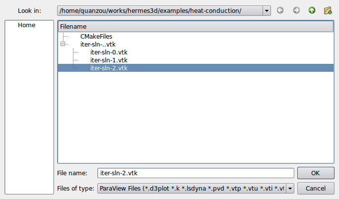
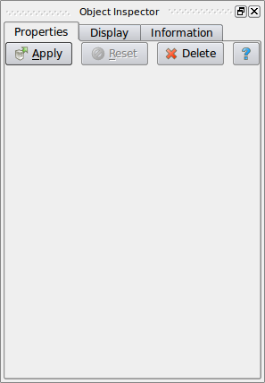
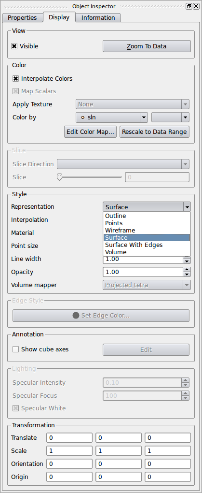
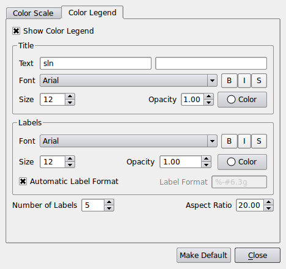
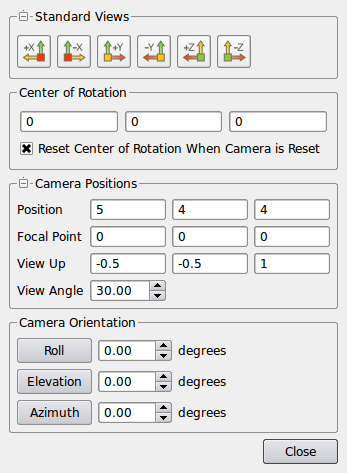
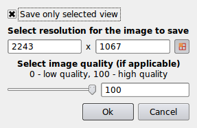

1. Load solution file into paraview:

2. Apply solution value:
In object inspector click the Apply button at the top of the Properties tab to cause the values to take effect.
3. Display solution value:
In object inspector click the Display button at the top of the Properties tab. Inside Style section, ParaView provides several options for hwo to display the geometry of the dataset. Usually we choose Surface with Edges, and Volume.
4. Display color legend:
Inside Color section of object inspector(see step 3.), first click Edit Color Map button, then, click Color Legend in the pop-up windows. Check the Show Color Legend box.
5. Adjust the camera:
On the top-left corner of the displied object, you can find a small camera icon-Adjust camera, click it. Change the position and view up values as shown in the figure below:
6. Save screenshot:
In File menu, you can find the save screenshot as following: